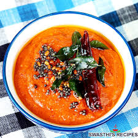

Home
Tomato Chutney

Description
This simple tomato chutney is tangy, slightly sweet, and full of warm spices. It's a great condiment to serve with grilled meats, sandwiches, or as a spread on toast. The chutney can be made ahead and stores well in the refrigerator for up to a week.
Ingredients
- 4 large ripe tomatoes, chopped
- 1 small onion, finely chopped
- 2 cloves garlic, minced
- 1 tbsp oil
- 2 tbsp brown sugar
- 2 tbsp apple cider vinegar
- 1/2 tsp mustard seeds
- 1/2 tsp ground cumin
- Salt and pepper to taste
Steps
- Heat oil in a pan over medium heat. Add mustard seeds and cook until they start to pop.
- Add the chopped onion and garlic; sauté until softened.
- Add chopped tomatoes, sugar, vinegar, cumin, salt, and pepper. Stir to combine.
- Simmer gently for 20–30 minutes until the mixture thickens to a chutney consistency.
- Allow to cool slightly, then transfer to a jar. Refrigerate and serve chilled or at room temperature.
Back to Home